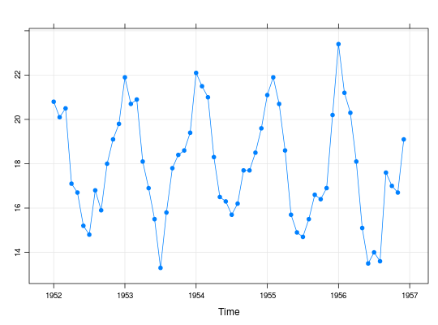

Dados de uma série de temperaturas em São Paulo, mensuradas como média de 23 leituras diárias durante um mês. Dados registrados no período de 1952 a 1956.
Uma série temporal (classe ts) com 60 observações
mensais, de janeiro de 1952 a dezembro de 1956.
Morettin, P. A., Toloi, C. M. C. (2006). Análise de Séries Temporais (2nd ed.). São Paulo, SP: Editora Egard Blucher. (Tabela 3.10 pág. 75)
data(MorettinTb3.10) str(MorettinTb3.10)#> Time-Series [1:60] from 1952 to 1957: 20.8 20.1 20.5 17.1 16.7 15.2 14.8 16.8 15.9 18 ...MorettinTb3.10#> Jan Feb Mar Apr May Jun Jul Aug Sep Oct Nov Dec #> 1952 20.8 20.1 20.5 17.1 16.7 15.2 14.8 16.8 15.9 18.0 19.1 19.8 #> 1953 21.9 20.7 20.9 18.1 16.9 15.5 13.3 15.8 17.8 18.4 18.6 19.4 #> 1954 22.1 21.5 21.0 18.3 16.5 16.3 15.7 16.2 17.7 17.7 18.5 19.6 #> 1955 21.1 21.9 20.7 18.6 15.7 14.9 14.7 15.5 16.6 16.4 16.9 20.2 #> 1956 23.4 21.2 20.3 18.1 15.1 13.5 14.0 13.6 17.6 17.0 16.7 19.1summary(MorettinTb3.10)#> Min. 1st Qu. Median Mean 3rd Qu. Max. #> 13.30 16.12 17.75 17.93 20.12 23.40tapply(MorettinTb3.10, cycle(MorettinTb3.10), summary)#> $`1` #> Min. 1st Qu. Median Mean 3rd Qu. Max. #> 20.80 21.10 21.90 21.86 22.10 23.40 #> #> $`2` #> Min. 1st Qu. Median Mean 3rd Qu. Max. #> 20.10 20.70 21.20 21.08 21.50 21.90 #> #> $`3` #> Min. 1st Qu. Median Mean 3rd Qu. Max. #> 20.30 20.50 20.70 20.68 20.90 21.00 #> #> $`4` #> Min. 1st Qu. Median Mean 3rd Qu. Max. #> 17.10 18.10 18.10 18.04 18.30 18.60 #> #> $`5` #> Min. 1st Qu. Median Mean 3rd Qu. Max. #> 15.10 15.70 16.50 16.18 16.70 16.90 #> #> $`6` #> Min. 1st Qu. Median Mean 3rd Qu. Max. #> 13.50 14.90 15.20 15.08 15.50 16.30 #> #> $`7` #> Min. 1st Qu. Median Mean 3rd Qu. Max. #> 13.3 14.0 14.7 14.5 14.8 15.7 #> #> $`8` #> Min. 1st Qu. Median Mean 3rd Qu. Max. #> 13.60 15.50 15.80 15.58 16.20 16.80 #> #> $`9` #> Min. 1st Qu. Median Mean 3rd Qu. Max. #> 15.90 16.60 17.60 17.12 17.70 17.80 #> #> $`10` #> Min. 1st Qu. Median Mean 3rd Qu. Max. #> 16.4 17.0 17.7 17.5 18.0 18.4 #> #> $`11` #> Min. 1st Qu. Median Mean 3rd Qu. Max. #> 16.70 16.90 18.50 17.96 18.60 19.10 #> #> $`12` #> Min. 1st Qu. Median Mean 3rd Qu. Max. #> 19.10 19.40 19.60 19.62 19.80 20.20 #>library(lattice) xyplot(MorettinTb3.10, type = c("o", "g"), pch = 19)